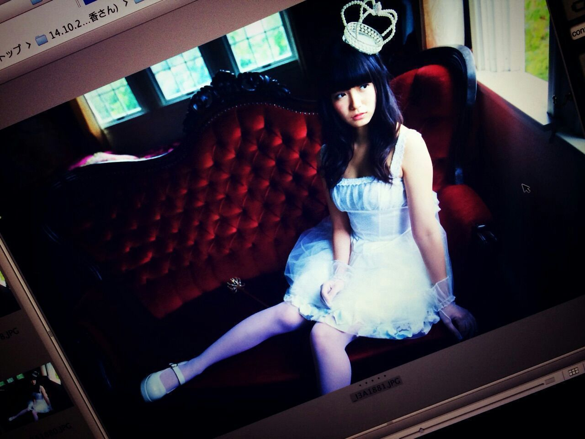
UTB 1月号に載ってるよ\( ˆoˆ )/
これ言うの何回目でしょう～＊
みんなは見てくれたかな？
ひめたんが「姫」になっちゃおう！企画
お洋服もセットも小物も
全部メルヘンで
撮影中ずっとうきうきでした♡
スタッフさんたちも
「ひめ～準備ができましたよ！」とか
「ひめ～こちらにどうぞ！」とか
言ってくださるものだから
この日は写真撮ってない時も
ずっとお姫さまごっこしてたの♡
ソログラビアは貴重な機会で
楽しみにしてたのもあるし
何よりUTBさんにまた
登場できたのが
もう本当に幸せでした( ˇωˇ )
11ヶ月ぶりの登場なんだけれども
前回とはまた違った雰囲気だし
私自身成長した姿を
見ていただけたらいいなと思います☆
よろしくお願いしますっ
UTBさんのインスタに
ひめたんのメイキングも
アップされました( ´ ▽ ` )
http://t.co/LfBBIDrbMp
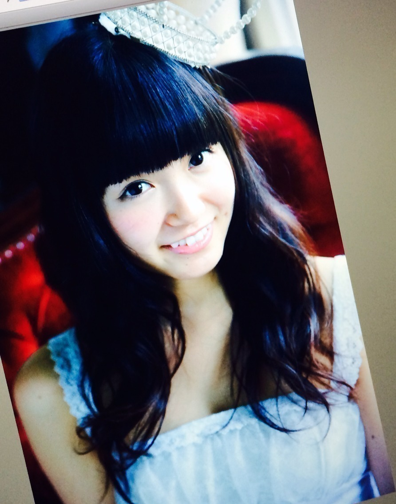
「超能力研究部の3人」
みなさんより一足お先に
試写室で観ました❁
ふふふ、何というか
みなさんにも早く観てほしい
私が感想を言うよりも、観て！
3人とも名女優(＊´ω`＊)
あ、ひとつ
前回の日記で書いてなかったこと
握手会で本当に
たくさんのひとが並んでくださった
って聞きました(゜ω゜)♡
嬉しいな～＊
みんな本当にありがとうねっ

 受験が終わったからじゃないと
受験が終わったからじゃないと
握手会行けないから
めっちゃ話が遅れてるけどいい？もちろんもちろん(´-ω-`)♡
気長に待ってるよ～
応援してます！
ひめたんはいちごはヘタ側からたべる？
それともヘタじゃない側から？ヘタ側から！
いちごは先端が一番甘いって
聞いたことあるよ(＊´ω`＊)
もうどこ行ってもひめたんビームだ(笑)
ひめたんビームは世界を救うね(笑)あれ、もしかしてばかにしてる？
これだけはどうしても克服できない
(するつもりもない)食べ物はあるかな？ピーマン。
ピーマンだけはいくつになっても
食べられるようになる自信がない......
ひめたん的に個別握手会は
何部がおすすめ？いつ来てくれても嬉しいけれど
朝はちょっと寂しいから
来てくれると嬉しいかなあ(＊´v`＊)
1部は下ろし巻き
4部はツインテール
毎回ってわけでもないけど、
だいたいこれ鉄板。
握手会にクイズ王さん来てたの？らしいね！お会いしたかった！
ひめは4部までで帰っちゃうんだけど
古川さんは5部にいらしたって
聞きましたよ～＊
ひめたんテラフォーマーズ
見てるんだね！！！
ひめたんは誰好き？アドルフさん！シーラちゃんも好き( ´•̥ω•̥` )
ひめたんの日記の
コメント欄下２ケタに46を踏んだ方へ
手書きでコメ返するコーナー
＼ ひめたん46 ／
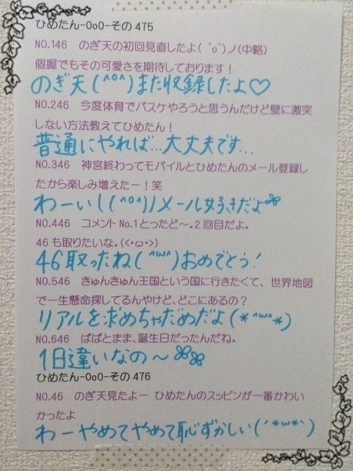
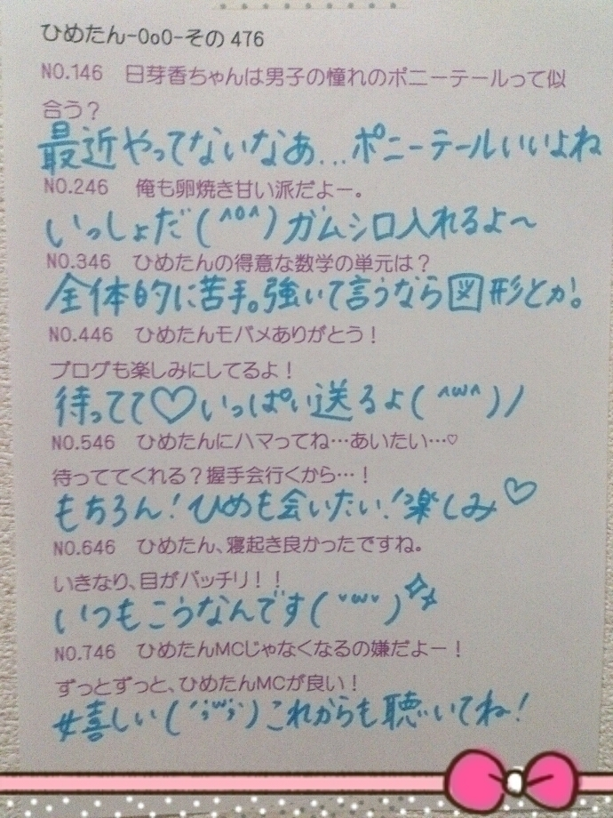
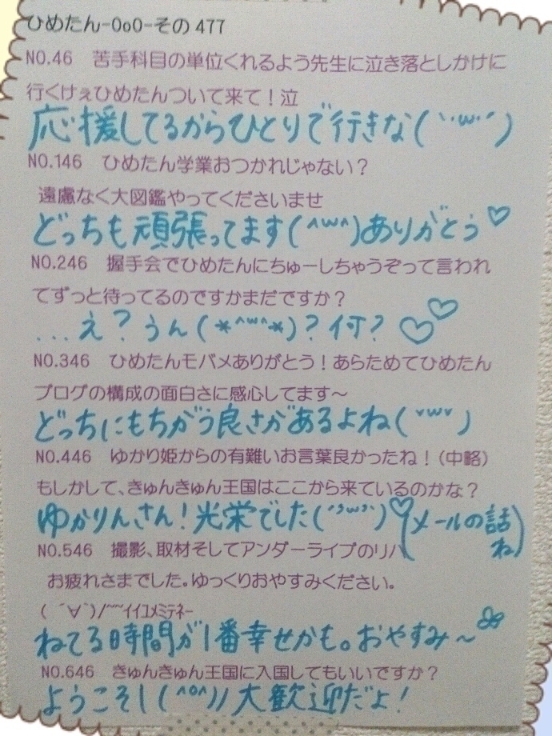
いつもたくさんのコメント
ありがとうございます\❁/
紅白歌合戦
みんなに出演してもらいたかった
いくちゃんにセンターで
あの歌を届けて欲しかったなあ
今は12月のライブに向けて
みんなで一丸となって
頑張るとき。
(＊´・ω・＊)
今日は幕張で
個別握手会でした\( ˆoˆ )/
来てくださったみなさん
ありがとうございました♡
お留守番ちーむのみなさん
レポするよ～
1部＊着ぐるみ × 下ろし巻き
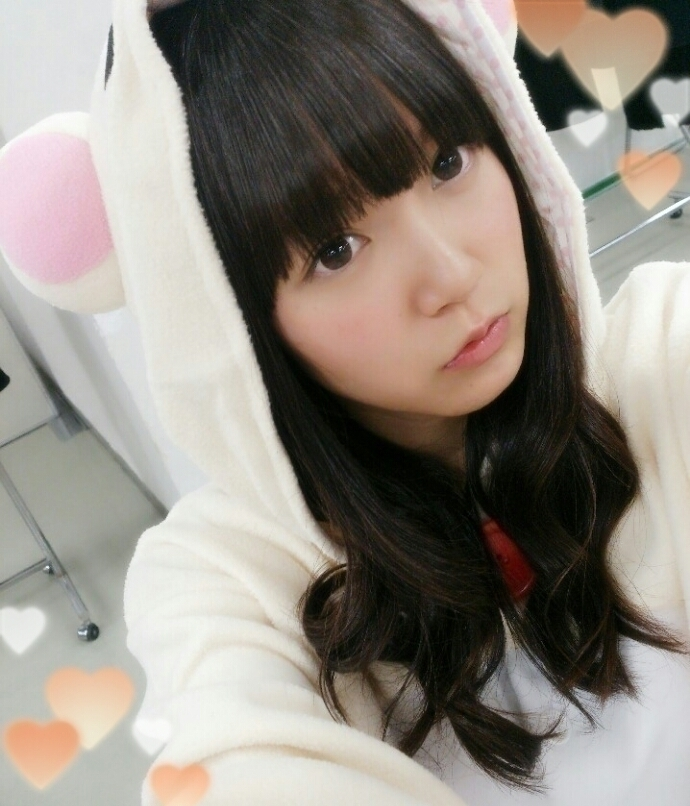
2部＊着ぐるみ × 低めサイドポニー
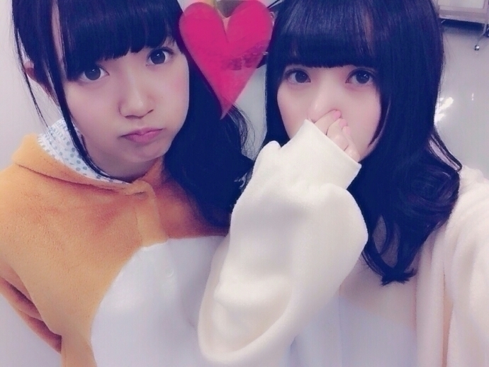
(髪ボサボサ......ポーズ謎......。)
3部＊ニット × ハーフアップ
4部＊ニット × ツインテール
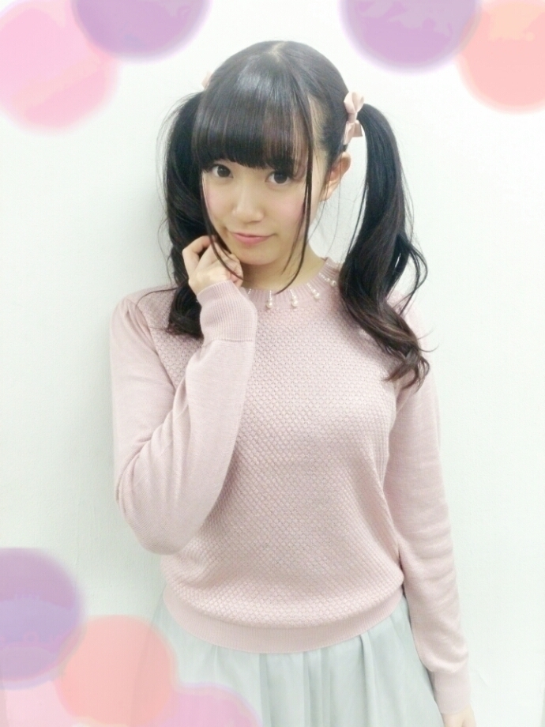
上下ともMINIMUM
着ぐるみは、格差社会コンビの
あすかりんとペア( ˇωˇ )
1部と2部の間に交換したんだよ～
実はちょっと前から
こーゆーのやりたいねって話してたので
今日実現してよかったです❁
3部と4部のお洋服はあれです
私服がダサいとNOGIBINGO!3で
言われてしまったので
セット売りしてたものを購入(笑)
マネキン買いしなさいとか
よく言われるの(´・ω・｀)
今日の握手会は
ちょっと久々だったよね～
番組の感想、イベントの感想、
雑誌の感想、アニメの話
他にもたくさん楽しいお話した( ^o^ )
NOGIBINGO!3のOLさんが
好評だったなあ～
あと昨日の乃木どこも
たくさんの方が観てくれて
びーむにやられたって( ^o^ )♡
あとライブの結果も
教えてくれてありがとう～
まだ応募できるので待ってるよ！
はじめましてのひとも
お久しぶりのひとも
みんな来てくれてありがとう(＊´v`＊)
ELOコーデもアンダーライブTシャツも
ピンクもツインテールも
あと名札も♡♡
関東では年内最後の握手会だったんだよね
みなさん良いお年を！
名古屋・京都に来てくれるひとは
ちょっと先になるけれど
お待ちしております～
そして昨日は
「沈黙の日曜日 in 富士急ハイランド」
公開生放送でした
FM FUJI 沈黙の金曜日チームの皆様
アルコ&ピースさん
ありがとうございました\( ˆoˆ )/
ゲストは乃木坂46と
WHITE JAMさんでした！
来てくれたみなさんも
聴いてくださったみなさんも
ありがとう♡
中には深夜から
並んでくださった方もいたと聞いて
寒い中よく頑張ったね(´；_；｀)
収録前後は
何かアトラクションとか
乗ったりしたのかな？
ライブパートでは
あの日 僕は咄嗟に嘘をついた
ガールズルール(橋本ポジ)
何度目の青空か？(橋本ポジ)
ガルルも何空も
アンダーライブと違うポジション！
トークパートも楽しかった(＊^ω^＊)
当日はお天気にも恵まれて
青空の下での収録
とっても気持ちよかったです
ひめたんびーむもできたし満足♪♪
UTB 発売されました！
オフショットや撮影エピソードは
次回の日記に書きます❁
みんなはもうチェックしてくれたかな？
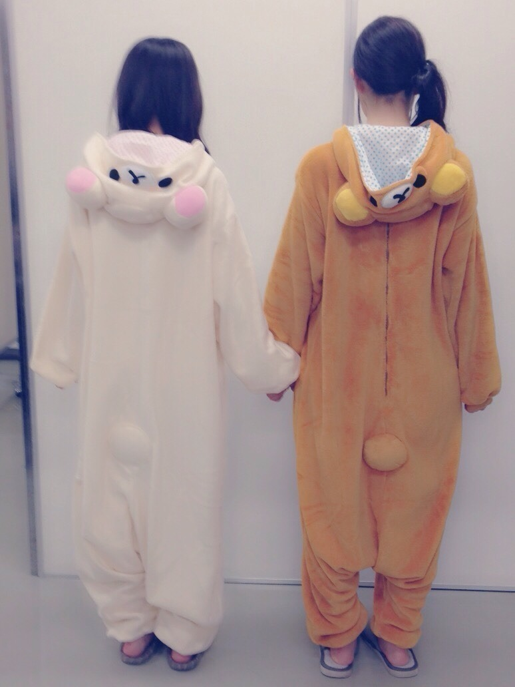

 乃木坂メンバーは
乃木坂メンバーは
モンハンをよくやるけどポケモンとかは
メンバーはやるの？もう買った？教えて〜ひめたんはゲームは持ってない( >_< )
機会があればゲットしたいな～
ゲーム好きさんおすすめ教えて！
あっ、広島の人っての
お好み焼き焼くのうまい？我が家ではよく作っていたので
まあ他の県民さんよりも
経験値は上でしょうね(＊´ω`＊)
ひめたんにしかわからないことが
知りたいなあ...いっぱいあるかうんいっぱいある♡♡
ひめたんの日記の
コメント欄下２ケタに46を踏んだ方へ
手書きでコメ返するコーナー
＼ ひめたん46 ／
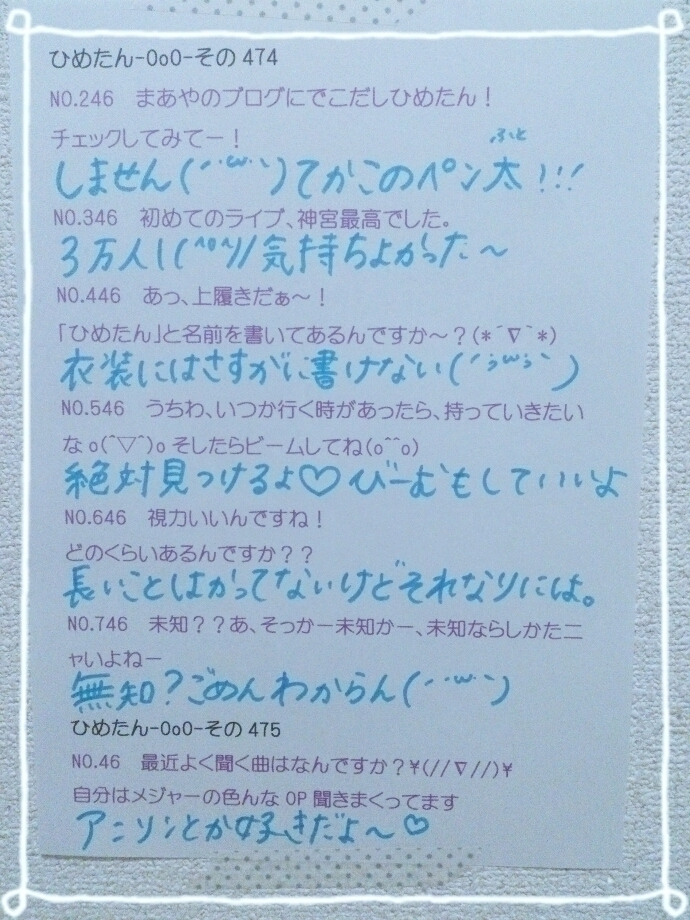
いつもたくさんのコメント
ありがとうございます
前回で更新500回目を迎えまして
みなさんからお祝いのコメント
たくさん来ててびっくり(´；_；｀)♡
これからも番組の感想や
めーるの返信や、近況報告！
なんでも書いてくださいね～
前回の日記のコメント
質問をピックアップするのが
追い付かなくて
今回は少なめになってしまった
ごめんね(´・ω・｀)
次回の日記に残りのやつ
くっつけるつもりです！
乃木どこ、UTB、公開生放送など
感想もありがとう❁
(＊´・ω・＊)
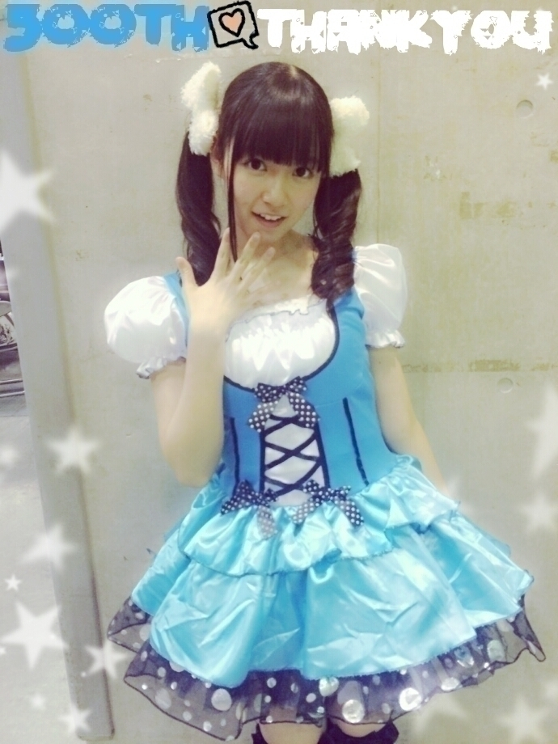
更新500回達成\( ˆoˆ )/
わーい！
みなさんいつも読んでくれてありがとう♡
コメント読むのが私の日課です
そんなわけでこれまで節目の時に
いろんなことやってきたけど
今回はめーるでみんなに助けを求めて
たくさん提案してもらったので
いろんなことしようと思いまーす( ^o^ )
＼着ぐるみcollection／
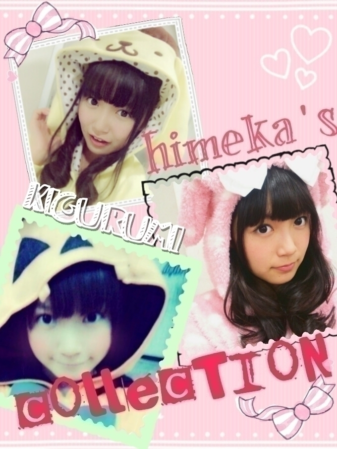
ちなみにここに載せてないやつで
個人的に買ったのが
あと3つあります♡
使い道？
パジャマしかないよね～
＼お気に入りのりぼんベスト3／
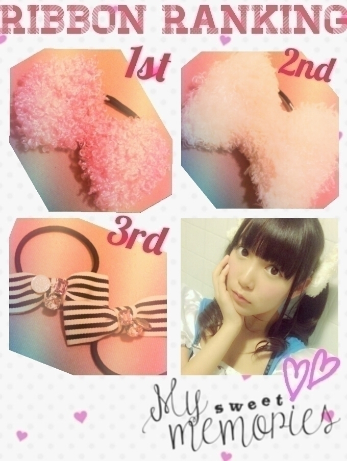
「My sweet memories」は
テンプレを引用したやつだから
どうぞ気にしないでください。笑
ちなみに現在コレクションは124個
1st......ぴんくもこもこ
多分これがコレクション第1号。
これからの季節にぴったり
2nd......しろもこもこ
いつかお話した、ままに捨てられたやつの
2代目です。これよく使う
3rd......ボーダー
ままが作ってくれたやつ。
のぎ天初回とかこれで出てます
＼新しい名札／
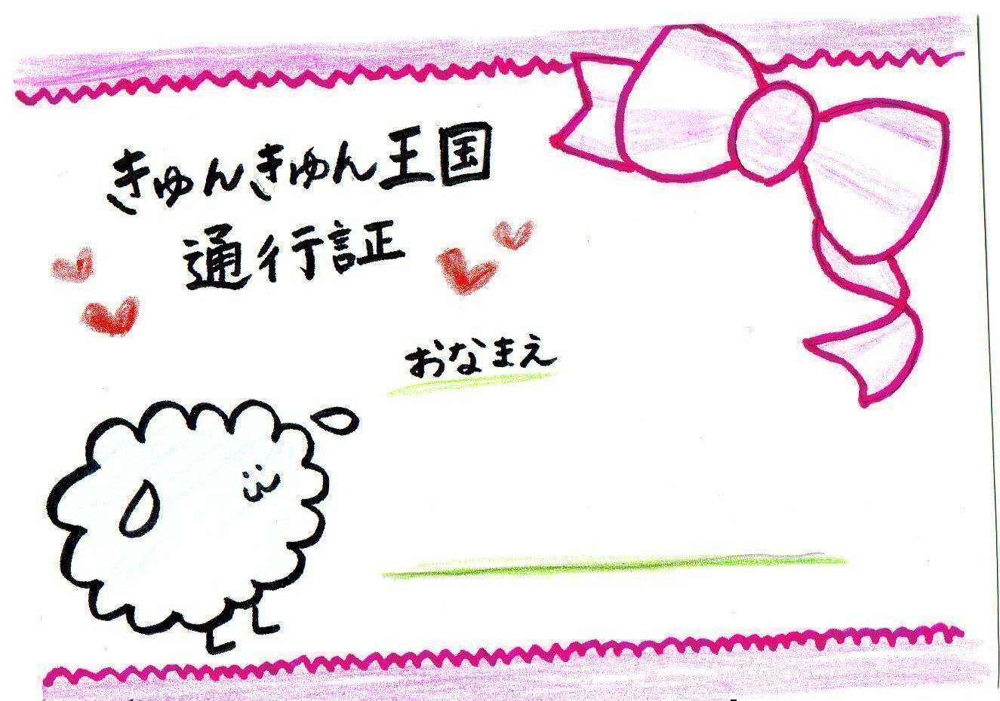
あのね、前回のやつが
お気に入りのひとは
それでもいいの(﹡ƠωƠ﹡)
でもね新しいの作ってってお声を
たくさんいただいたので
作ってみました♡
来年は未年だからめりりーぬさん
めりりーぬさん水色に塗ったのに
スキャンしたら消えたゃった
みんな好きな色塗って～
＼手書きメッセージ／
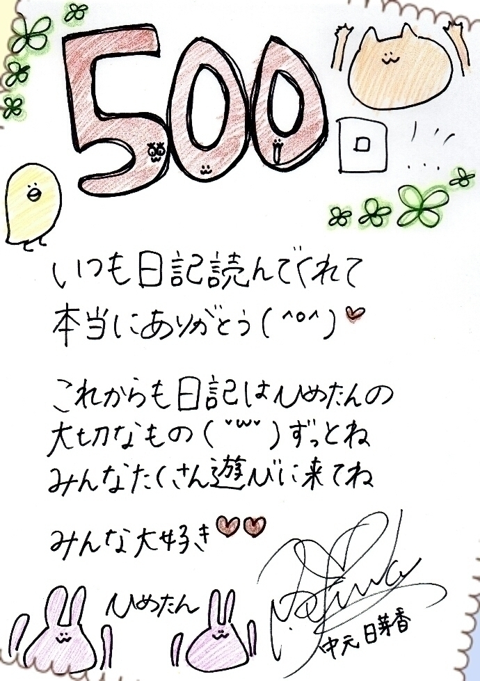
手書きメッセージは
ひめの案♡
 まいやんのあすなろ抱きどーでしたか？
まいやんのあすなろ抱きどーでしたか？きゅんきゅんした(´pωq`)♡
陽菜ちゃんのあごクイ？も♡
スクフェスでUR持ってるー？？リセットするまえは
にこちゃん持ってたんだけど
今はゼロ(´；_；｀)
SR真姫ちゃんを何故か
異常に持ってる。真姫ちゃーん
1枚目の写真のひめたん
きらきらしてる∑(ﾟДﾟ)
やっぱりひめは一般人とオーラが違うから
きらきらしちゃうんですか？(きらきらのフレーム......)
中三組はみんな
頭が良いイメージがあるのは
自分の気のせいでしょうか？お勉強がんばってる子の
集まりかもしれません(＊^ω^＊)
いや、別にひめたんは
お勉強好きでもないけども。
OLひめたんが職場にいたら
仕事に身に入らなくなりそうなくらい
可愛いかったです。是非、握手会でもwお褒めの言葉をたくさん
ありがとうございます\( ˆoˆ )/
大丈夫、遠慮しときます\( ˆoˆ )/
いつもたくさんのコメント
ありがとうございます❁
リラックス法もいっぱい
教えてもらった(∗ ˊωˋ ∗)
癒しよかもんかもん
ひめたんの日記が癒しです～とか
メールが癒しです～とか
そんなこと言われてひめも癒された～
明日11/22 UTB発売！
よろしくお願いします♡
(＊´・ω・＊)
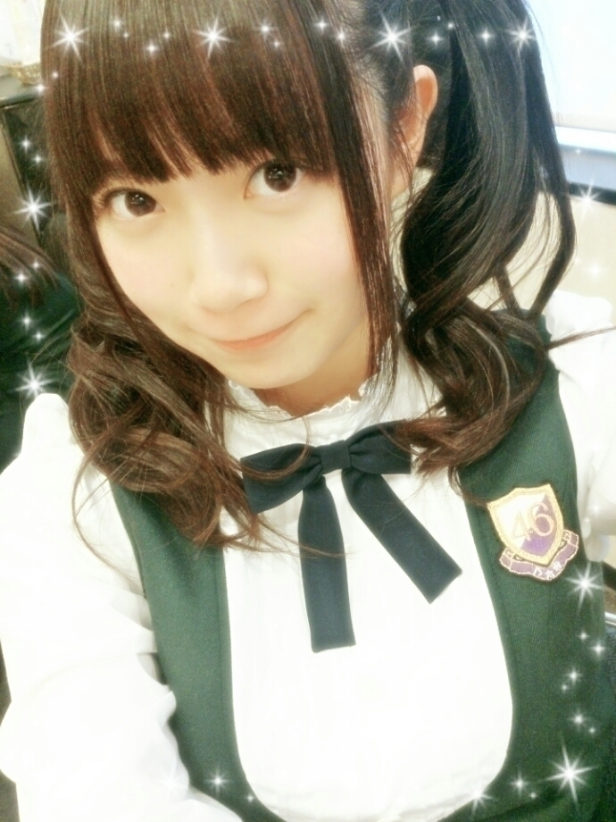
大阪 似顔絵会&スペシャルライブ
終わりました\( ˆoˆ )/
来てくださったみなさん
ありがとうございました！
今回ふたつのチームに分かれて
ライブをやるのは初の試み。
どうかな？楽しんでもらえたかな？
セットリストはまだ言えないんですが
昨夜限定！他では見れない！
そんなライブだったかなと思う(＊´v`＊)
私個人的には
初めて務めるポジションが多くて
新鮮な気持ちでステージに立ちました
混合にすることで
選抜楽曲においては
選抜メンバーから学んだことがありました❁
アンダーメンバーは
アンダーライブで培ったパワーを
活かせたんじゃないかな...？
とにかく楽しかった！
西日本選抜大好き\( ˆoˆ )/
またこのメンバーでライブやりたい！
似顔絵会に来てくれたみんなも
ありがとうございました
あのーひめたん絵は
そんなに上手ではないんですが(´-ω-`)
でもお話できて楽しかった～
もしまた次の機会があれば
みなさんもぜひ応募してみてね☆
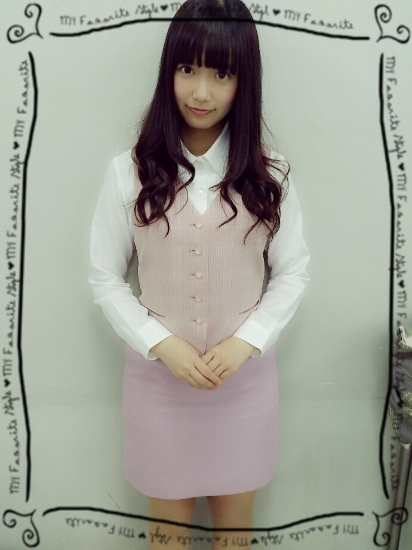
NOGIBINGO!3#7
みんな観てくれたかな？
ひめたんはまだ観てない( >_< )
ひめたんは寸劇のOL役になりました
どうー似合うかなー？
髪も下ろしてみたよ♡
だってツインのOLさんは
オフィスにいないだろうからね⌒ﾟ( ･･ )ﾟ⌒
みんなかっこよかった！
紫吹淳さんは本当にきらきらしてて
素敵な方でした
愛未ちゃんずっとふわふわしてた～
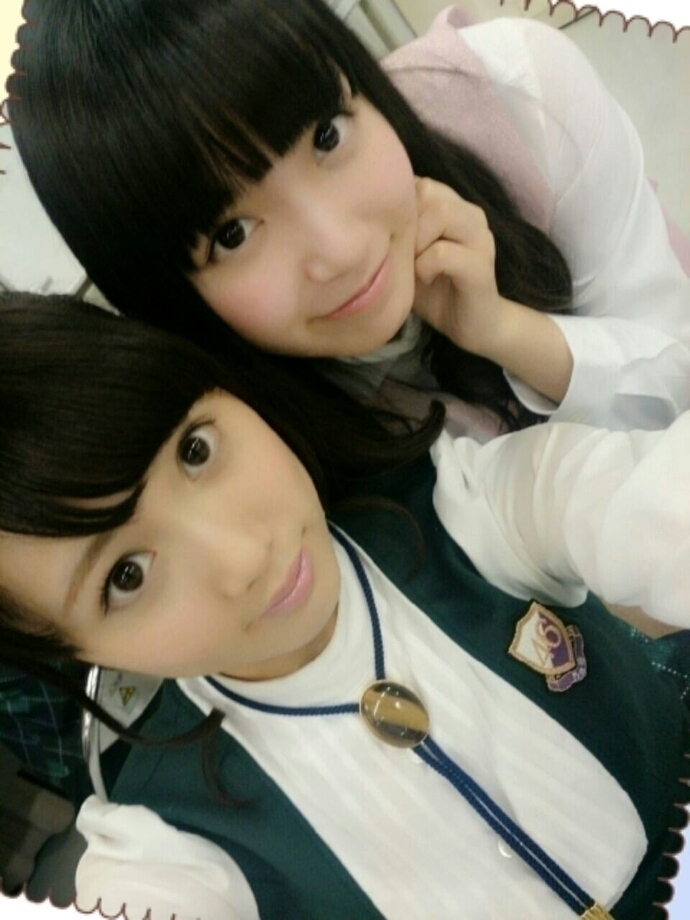
みんなはリラックスしたいとき
どんなことするのー？
教えて～⊂( ˆoˆ )⊃
ひめたんは半身浴してるときと
寝るときが幸せなんだけど
なんか普通でしょ？
 ひめたんの好きな服のブランドは？？
ひめたんの好きな服のブランドは？？LIZLISA、LODISPOTTOかな
ナレーションや声優さんには、
興味がありますか？ありますよ！憧れます！
ひめたんって昔から頭良かったの？地頭は知らないけど( ´_ゝ`)
でも努力はする子だったと思うよ
テスト前はお勉強がんばってたよ～
ひめたんは男装したい？
やるならオスカルみたいなのかな？笑男装は似合わない気がするんだよね
オスカル......似合うかな？
ひめたんの日記の
コメント欄下２ケタに46を踏んだ方へ
手書きでコメ返するコーナー
＼ ひめたん46 ／
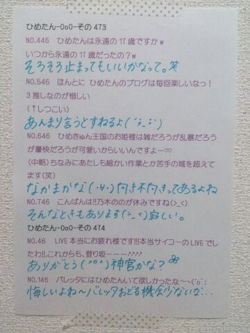
いつもたくさんのコメント
ありがとうございます
なんか励ましのメッセージもたくさん
元気になります(´；_；｀)
ライブや番組の感想もありがとう❁
いよいよ次が500回！
いつも日記を楽しみにしてくださっている
みなさんに感謝です。
(＊´・ω・＊)
更新遅くなりました～
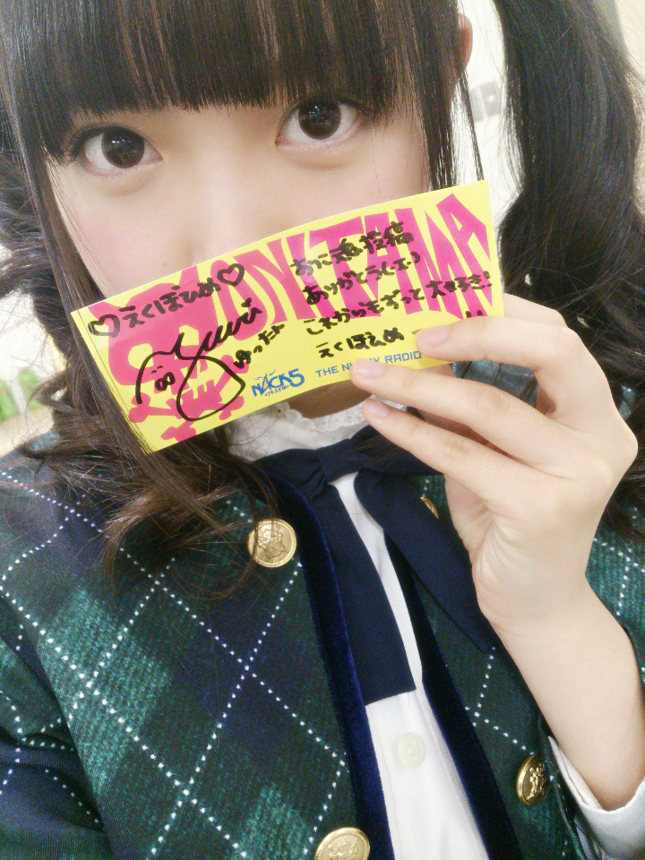
おに魂シールどーん♡
ゆったんありがとう(´pωq｀)
嬉しい！大切にします！
みんなもメール送ってゲットしてね～
月刊エンタメさんに
取材していただきました！
ひめたんはアンダーライブのことを
お話してきたよ～＊
今回はいろんなメンバーが
登場するので
楽しみにしててね(＊´ω`＊)
来週は10thシングル
CD特典イベント&ライブ
ひめたんは大阪チームです
参加するよってみなさん
よろしくお願いします！
今回はいままでとは違った形の
イベントになるから
どんな雰囲気なのか楽しみ⊂( ˆoˆ )⊃
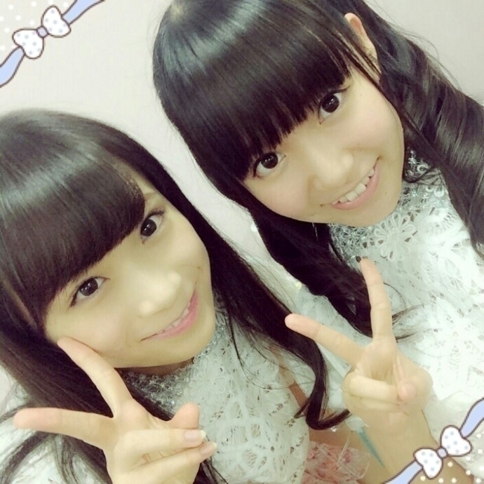
まな＊ひめ
uP!!! Presents
加藤ミリヤ・清水翔太
THE BEST 2MAN TOUR 2014
を観に行きました！
ライブはいつもステージに立つ側で
観ることはあまりないので
新鮮な気持ちでした( ˇωˇ )
ジャンルは違うかもしれないけれど
いろんなことを吸収して
帰ったつもりです
ライブは観ててわくわくする
私も会いに来てくださったみなさんの
心を動かすパフォーマンスがしたい。
クリスマスライブがんばります
ありがとうございました！
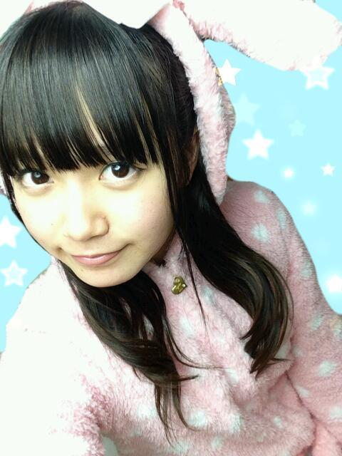
ぴょーん
スクフェスえりちイベ終わった～
えりち1枚ゲット。満足です( ^o^ )
クリスマスプレゼント企画も
投票結果出たね～♡♡
 ちなみにひめたんは
ちなみにひめたんは
長崎に来たことある？去年修学旅行で行ったよ\( ˆoˆ )/
カステラもごはんも美味しかった～
陽菜ちゃんのふるさとでもあるよね
大阪のイベント当たったよ
どうやったらひめたんに
見てもらえるかなぁ？ひめたんコールいっぱいしてほしい♡
みんなのこと頑張って見つけるね！
広島の正月はどんな感じなんだい？
広島特有の食べ物や風習が
あったりするんかな？広島特有？わかんないけど
おもちはまるかったよ～
ひめたん755始まってから
モバメの数すごく増えましたね
国民想いの姫様ステキですみんなが待っててくれるなら
いっぱい送るよ～＊
乃木坂に入ってなかったら
友達に...のくだりは意外。
そんなに尖ってたの？尖ってるってどゆこと(｀・ω・´)笑
うわーこの子自分のことひめたんとか言って
超アイドルしてるーって思ってたら
根は普通の子でしたって話←
ちーちゃんにも言われるし
いろんなひとに言われる♡♡
ひめたんの日記の
コメント欄下２ケタに46を踏んだ方へ
手書きでコメ返するコーナー
＼ ひめたん46 ／
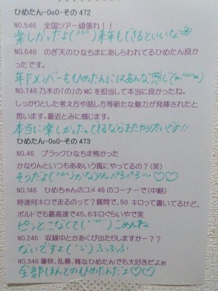
いつもたくさんのコメント
ありがとうございます
最近寒くなってきたね
みんな体調は大丈夫かな？
ひめは昨日から
のどが いがいがいがいがいがいがします
ケア強化しなきゃ(＊´v`＊)♡
みんなも気を付けてね！
(＊´・ω・＊)